Quino Cartoon, Picasso's Guernica, Guernica Historical Photos: Discussion
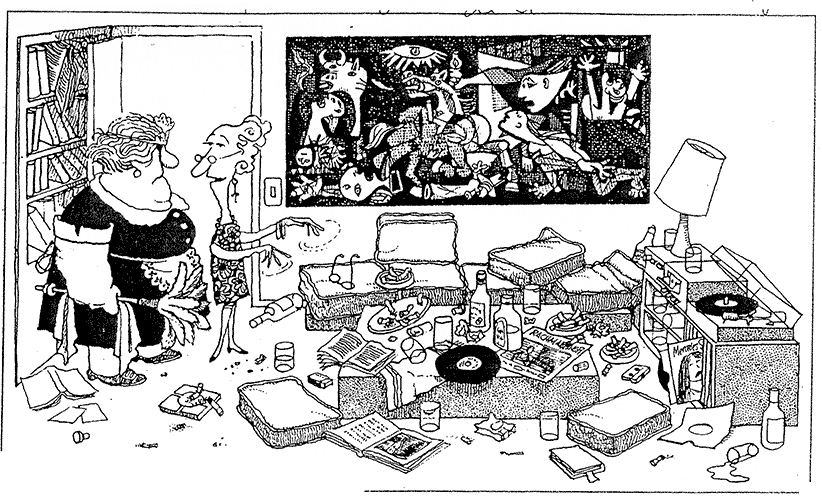
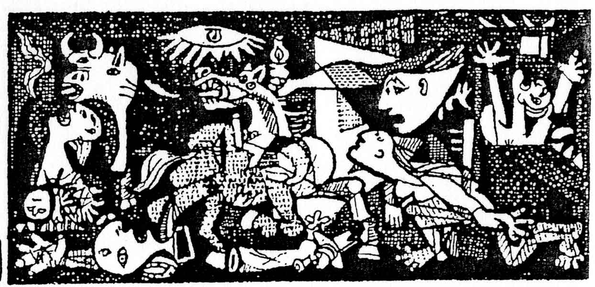
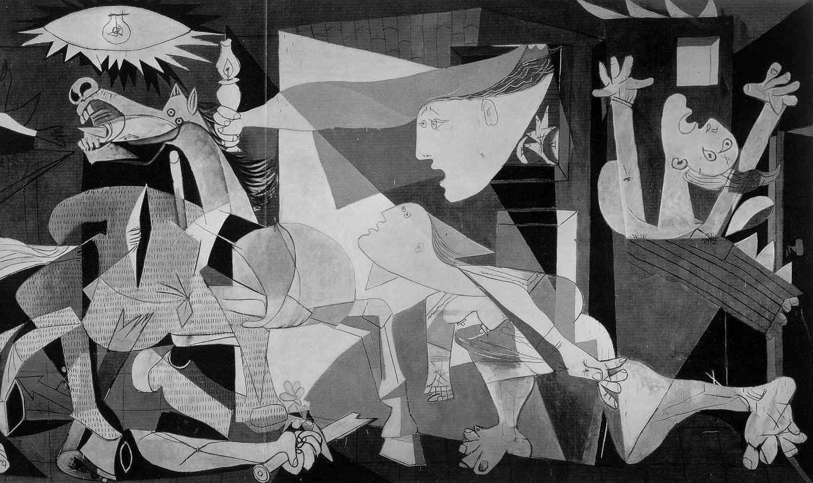
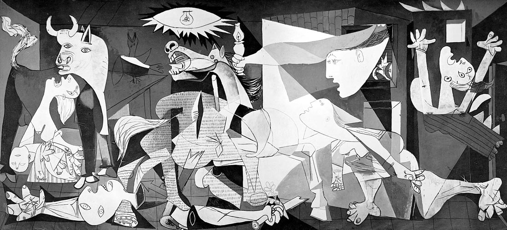
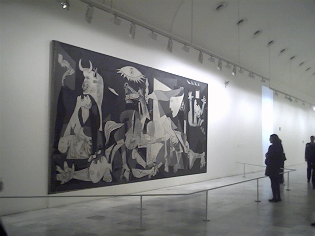
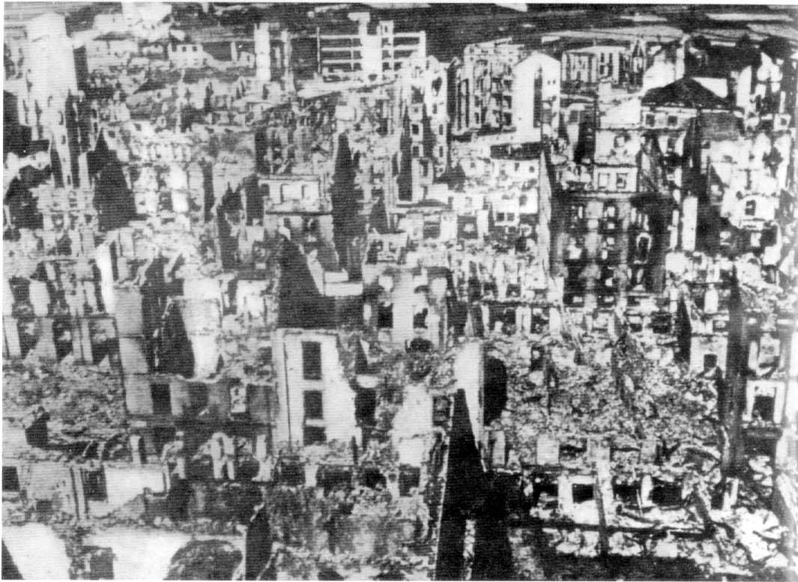
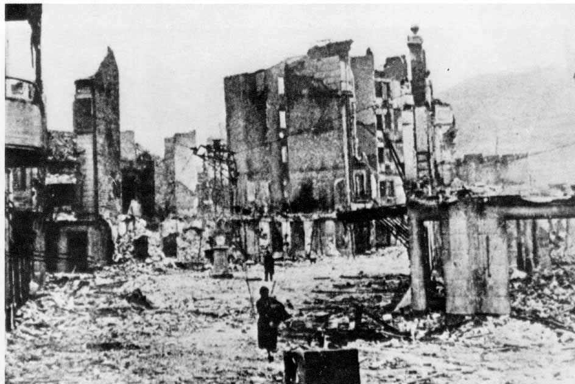
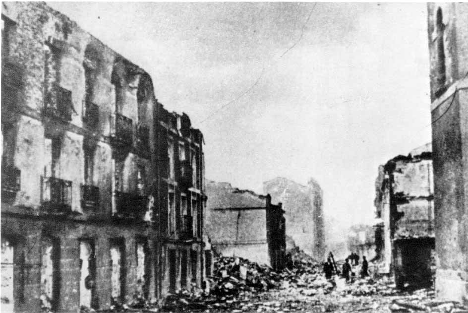
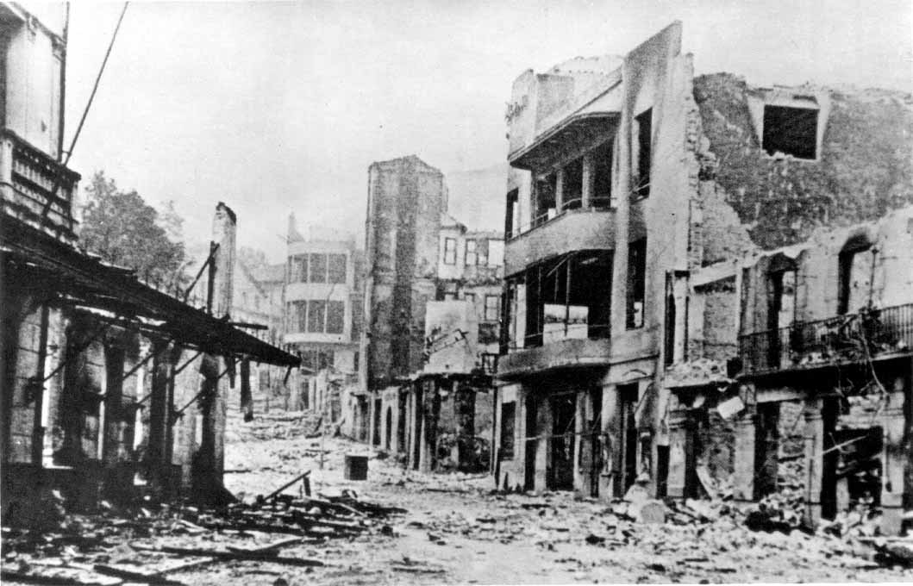
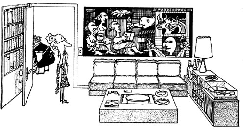
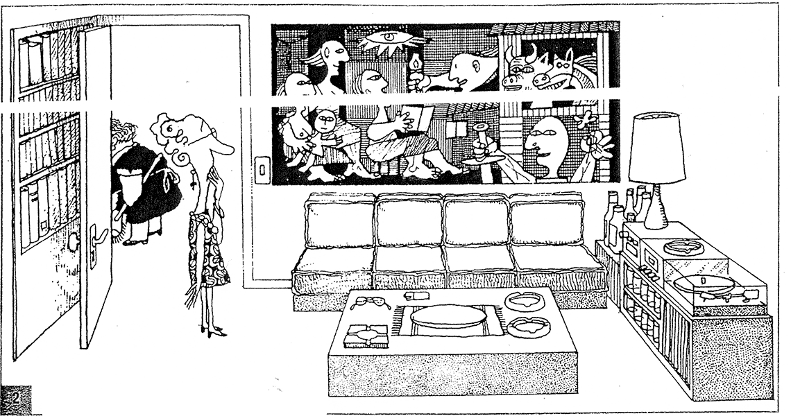
Here are some images and cartoons for use in an ESL or Sociology or other related student discussion situation. Complete ESL Lesson.